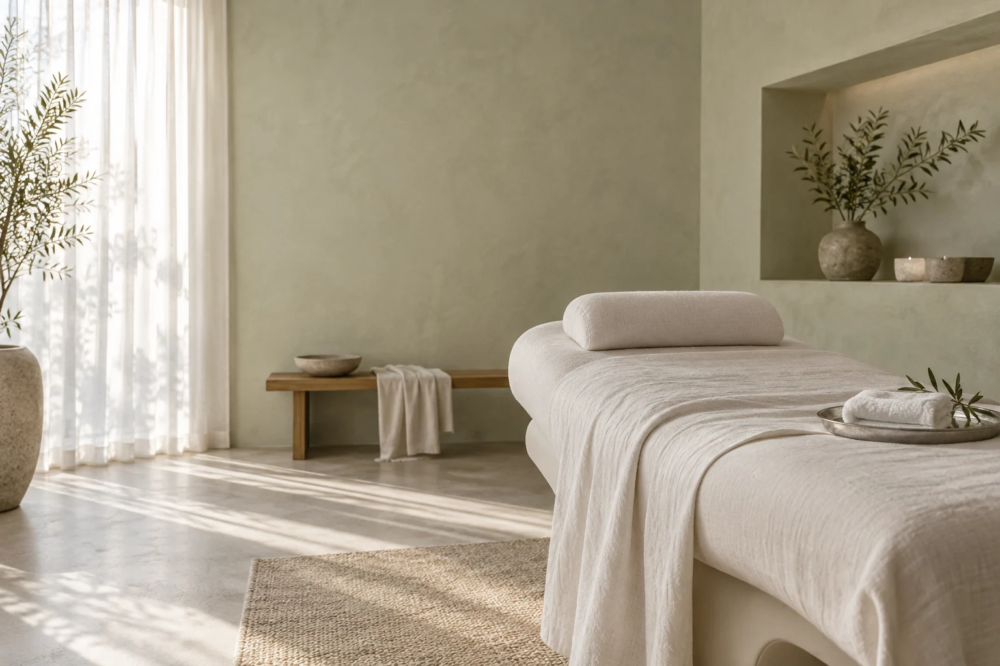

月1回
毎月の予定に
自分の時間をひとつ。
A LITTLE TIME, JUST FOR YOU.
月に一度、自分へ戻る。
無理なく通い続ける、
会員制フェイシャルという選択。

忙しい毎日の、少し手前で。
鏡を見ながら、今日も短いお手入れ。
予約を取ろうと思ったまま、過ぎていく一週間。
自分の肌と向き合う時間を、
予定のひとつにしてみませんか。
凪肌は、月額制と固定予約を組み合わせた
フェイシャルサロンの提案用コンセプトです。
その日の肌の様子、生活のリズム、気になること。
短い対話から、一人ひとりのお手入れを考えます。
医療行為や効果の保証をするサービスではありません。
01予定に組み込む
固定予約という通い方
02肌の様子を相談しながら
続け方を考える
03必要なペースを選ぶ
月1〜3回のプラン
YOUR LIFE, YOUR PACE
気になるテーマを選んでご覧ください。
仕事や家事の予定と一緒に、肌を見つめる日を決める。いつものケアを振り返るところから始めます。
気になっていることや普段のお手入れをお聞きする想定です。
具体的な施術内容や注意事項は、正式なメニューでご案内します。
ご自宅でのお手入れと、次回の通い方を一緒に整理します。
MEMBERSHIP
毎月の予定に
自分の時間をひとつ。
暮らしの合間に
相談する機会を。
生活のペースに合わせて
通う頻度を選ぶ。
月額料金・入会金・契約期間・解約条件は未確定です。
このデモでは購入・入会はできません。
FIRST VISIT
はじめての体験
11,000円（税込）
カウンセリングを含む75分の想定です。
価格と時間は提案用の仮表示です。
持ち物・遅刻・キャンセル規定は正式資料の確認後に掲載します。未確定の規定で予約を受け付けることはありません。
BEFORE YOU VISIT
通う曜日や時間帯をあらかじめ決める想定の仕組みです。振替の可否・期限は正式な規定を確認して掲載します。
入会に関する正式な条件は未確定です。公開時には、体験だけの利用可否を明記します。この画面では入会・申込みを受け付けていません。
受け入れ条件や注意事項は正式な施術内容の確認後にご案内します。医療的な判断や診断はこのデモでは行いません。
本制作では予約ボタンから外部予約サービスへ移動する設計です。現在は未接続のため、予約の流れだけを確認できます。
YOUR QUIET PLACE
架空サロン・提案用コンセプト